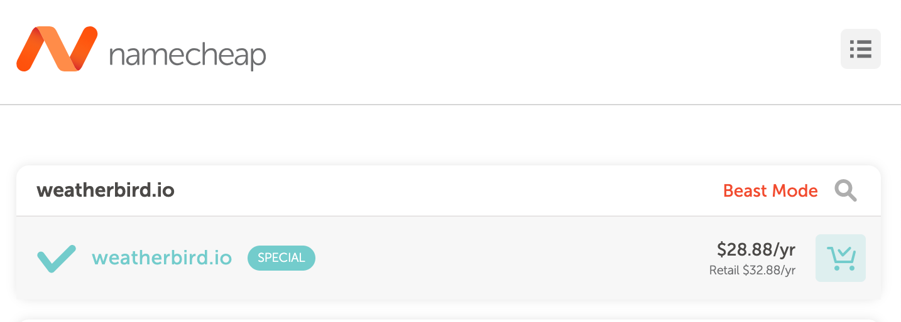

Site Purpose
Company Name: Weatherbird
Company Purpose:
Forecasting the weather is something that has been studied and nearly perfected over centuries of trial and error. Today, we have a very accurate report of the weather right in our pockets on our mobile devices. The problem is, sometimes we just don't think about checking the weather before a camping trip or outdoor activity. What if your phone was able to analyze your calendar and planned events and proactively make suggestions? Weatherbird is the first ever weather app that uses AI to do the research for you and help you avoid those rain storms and snow blizzards.
Domain:
Logo